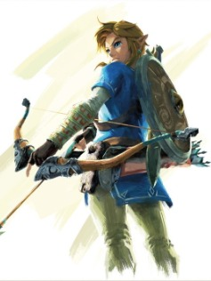
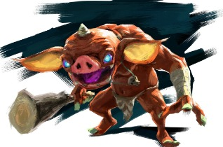
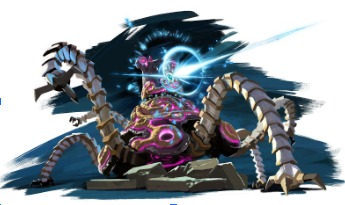
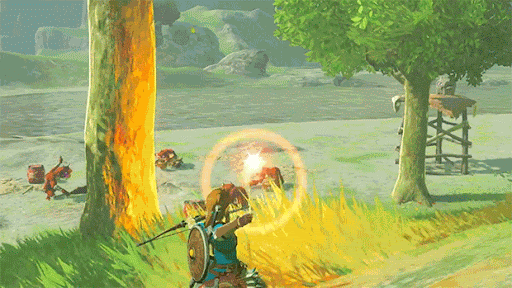
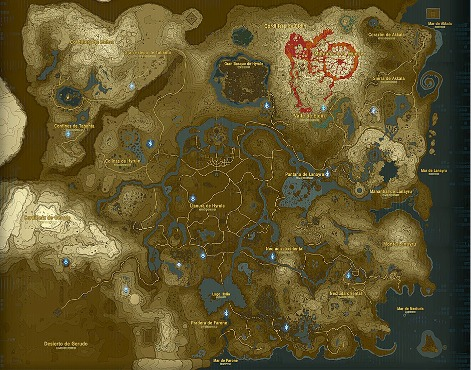
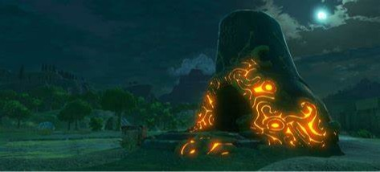
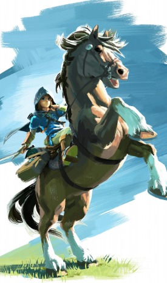
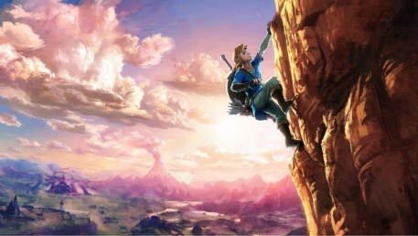

The Legend of Zelda: Breath of the Wild es un juego de acción y aventura en mundo abierto,
desarrollado por Multimedia Studios. El juego sigue las aventuras de Link, quien despierta después de
estar dormido durante 100 años para enfrentarse al malvado Ganon y salvar el reino de Hyrule.
Cuenta una leyenda que hace 10.000 años existió una civilización avanzada, que con ayuda de su tecnología,
cuatro guerreros de diferentes tribus, una princesa y un caballero consiguieron derrotar a un ser maligno
que buscaba sumir el mundo en un gran cataclismo.
En The Legend of Zelda: Breath Of the Wild exploramos el vasto reino de Hyrule, que yace devastado debido al
ataque de Ganon, el cual hace 100 años intentó destruir el reino, pero gracias al poder de la princesa
Zelda, este fue sellado en el castillo de Hyrule. Sin embargo el poder de Zelda se debilita, y pronto Ganon
conseguirá liberarse y cometer por fin su plan.
Tras un siglo sumido en un largo sueño, recuperándose de su anterior batalla, nuestro protagonista, Link,
tratará de impedirlo. Pero esto no resultará una misión fácil, por lo que necesitaremos la ayuda de las
cuatro bestias divinas, que han sido corrompidas por Ganon, y recuperar la memoria de lo que fuimos en un
pasado.
PROTAGONISTA
Link será el personaje que nos acompañará durante nuestra aventura, este fue elegido para combatir a Ganon y
nombrado como caballero de la princesa Zelda.
En cuanto a su físico nos encontramos con un muchacho de apariencia joven, estatura media, rubio, ojos
azules, y que destaca por su valentía y su coraje.

ENEMIGOS
En nuestro juego encontrarás una gran variedad de enemigos que no dejarán que tu aventura resulte sencilla,
algunos portarán armas, escudos, dispararán flechas, otros usarán magia o incluso todo eso combinado. Los
enemigos tampoco son tontos desarrollarán estrategias, como crear fortificaciones o emboscar al protagonista
por sorpresa.

Nuestros enemigos no solo serán seres vivos, la tecnología que un día fue construida para proteger el reino
ha sido poseída por Ganon, y ahora nos amenaza con disparos de energía que será mejor que esquivemos, si no
queremos una muerte asegurada.

GAMEPLAY
El sistema de combate de este juego es uno de sus puntos fuertes, contaremos con un gran arsenal de armas
que podemos encontrar durante nuestra aventura, unas asestarán golpes certeros pero más lentos, otras
numerosas estocadas, o algunas serán más equilibradas. También dispondremos de escudos para protegernos de
los ataques de los enemigos y arcos con diferentes tipos de flechas para atacar a distancia. Aunque también
puedes pasar sigilosamente sin ser visto para evitar riesgos. A todo esto hay que sumar diferentes tipos de
prendas que nos protegerán y que hasta podremos mejorar.

Pero las armas no serán la única herramienta para combatir. También tendremos habilidades únicas que iremos
desbloqueando y tecnología que nos haga la vida más fácil, paralizando a nuestros enemigos o volándolos por
los aires.
Otras mecánicas que forman la base del juego son: correr, nadar, corazones que indican nuestra vida,
recolectar objetos,
comer, utilizar elixires que aumentan nuestra resistencia o nuestra fuerza, comerciar, etc
-Mapa, misiones y santuarios:
El mapa de Hyrule es gigantesco, está dividido en varias zonas con su propio clima, enemigos, poblaciones y
mucho más.
Este podrá ser explorado en el orden que el jugador desee, o incluso dejar zonas sin explorar, ¿pero quién
sabe los
misterios que te aguardan a la vuelta de la esquina?

Durante nuestro recorrido se nos irán planteando diferentes misiones que normalmente nos serán
recompensadas, unas veces
con fortuitos hallazgos u otras con raros objetos. Estas se dividen en secundarias y principales,
dependiendo de su
importancia en el transcurso de la historia del juego.
También tenemos que nombrar los santuarios, ubicaciones distribuidas por todo el mapa que nos presentarán
diferentes
desafíos que muchas veces nos harán quebrarnos la cabeza y algunas también las manos, y que también tendrán
su
recompensa.

MECANICAS EXTRA
Una de las mecánicas más fascinantes de nuestro juego es la de montar a caballo, en nuestro juego
encontraremos
distintos tipos de caballo con características propias que podremos adiestrar, y que nos ayudarán a
desplazarnos a lo
largo y ancho del reino.

Otras de las mecánicas a destacar del juego será la de escalada y la de planear con un ala delta, estas nos
permitirán
alcanzar nuevas ubicaciones o escapar de nuestros enemigos. Pero cuidado, porque si te quedas sin energía…
¡Te caerás!

Breath of the Wild es un juego que pone mucha atención al detalle, y lo podemos ver en mecánicas como la
temperatura, el clima, los distintos animales que podremos encontrar a lo largo del mundo, … ¡Incluso
podremos cocinar!
OBJETIVOS
250.000 EUR €:
Terminar el desarrollo del juego al completo.
300.000 EUR €:
Venta del soundtrack en forma de vinilo disponible en todos los países.
400.000 EUR €:
Doblaje del juego a varios idiomas: Español Castellano, Alemán, Francés e Italiano.
500.000 EUR €:
DLC gratuito para los que han apoyado la campaña en forma de epílogo y añade nuevos lugares que
explorar y mazmorras en las que adentrarse junto con otro contenido como objetos y equipamiento.
1.000.000 EUR €:
Añadido de un modo cooperativo local y online en una campaña adicional diseñada específicamente para
ello.
MÚSICA
EQUIPO
Rubén Alba Jiménez: preguntas frecuentes, contribuciones, animación 3d.
Eduard Florea: Lema de guerra, descripción corta, nombre de la compañía, descripción del juego,
implementación de texto del word a la página web y director de operaciones.
Andrés García Arquero: creación del logo de la empresa y del juego, objetivos, iluminación y
modelado de entornos.
Adrián Gómez-Lobo Núñez: Diseño página web, Jefe de Proyecto y programador.
Víctor Manuel Moreno Gutiérrez: preguntas frecuentes, campaña, contribuciones y diseñador de niveles.
Jose Manuel Pastor Gonzalez: Canción original, Video promocional y Compositor.
Contribuir 25 EUR€ o más
Incluye:
Copia digital del juego para la plataforma elegida.
Contribuir 40 EUR€ o más
Incluye:
Copia digital del juego para la plataforma elegida.
Soundtrack en formato digital.
Dibujos en formato digital.
Contribuir 70 EUR€ o más
Incluye:
Copia en formato físico del juego para la plataforma elegida.
Soundtrack en formato digital.
Dibujos en formato digital.
Fotografías impresas del juego.
Contribuir 100 EUR€ o más
Incluye:
Copia en formato físico del juego para la plataforma elegida.
Soundtrack en formato digital.
Dibujos en formato digital.
Fotografías impresas del juego.
Poster oficial.
Libro físico: The Legend Of Zelda Breath of the Wild Guía y Consejos.
Contribuir 200 EUR€ o más
Incluye:
Copia digital del juego para la plataforma elegida.
Copia en formato físico del juego para la plataforma elegida.
Soundtrack en formato digital.
Dibujos en formato digital.
Fotografías impresas del juego.
Poster oficial.
Libro físico: The Legend Of Zelda Breath of the Wild Guía y Consejos.
Tu nombre aparecerá en los créditos del videojuego.
Acceso a la Beta del videojuego: ¡Podrás probar el juego antes de su lanzamiento oficial y
darnos tu
opinión, así como un acceso anticipado a posibles actualizaciones!
Contribuir 1.000 EUR€ o más
Incluye:
Copia digital del juego para la plataforma elegida.
Copia en formato físico del juego para la plataforma elegida.
Soundtrack en formato digital.
Dibujos en formato digital.
Fotografías impresas del juego.
Poster oficial.
Libro físico: The Legend Of Zelda Breath of the Wild Guía y Consejos.
Tu nombre aparecerá en los créditos del videojuego
Acceso a la Beta del videojuego: ¡Podrás probar el juego antes de su lanzamiento oficial y
darnos tu
opinión, así como un acceso anticipado a posibles actualizaciones!
Mapa del juego en formato físico.
Ilustración a acuarela de tu personaje favorito.
Libro de arte original del juego
Dibujo exclusivo hecho a mano por el estudio (1 diferente para cada contribuidor).
Llamada con el estudio para resolver cuestiones o hablar sobre el desarrollo del juego.
Vinilo con el soundtrack del juego (en caso de alcanzar el objetivo).
Figura del protagonista del videojuego a escala 1:5 con tu nombre grabado en la base.
Copia digital del juego para la plataforma elegida.